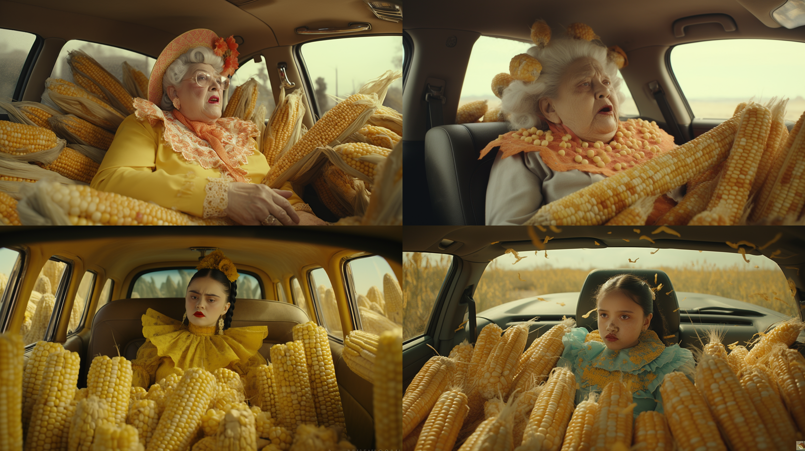
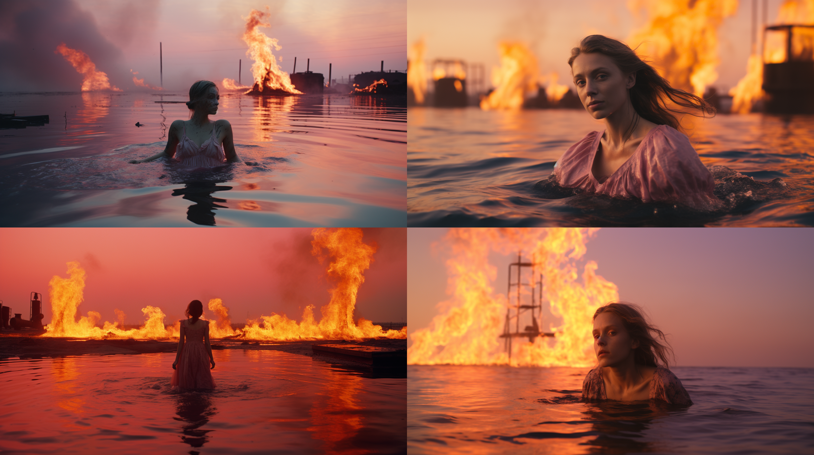
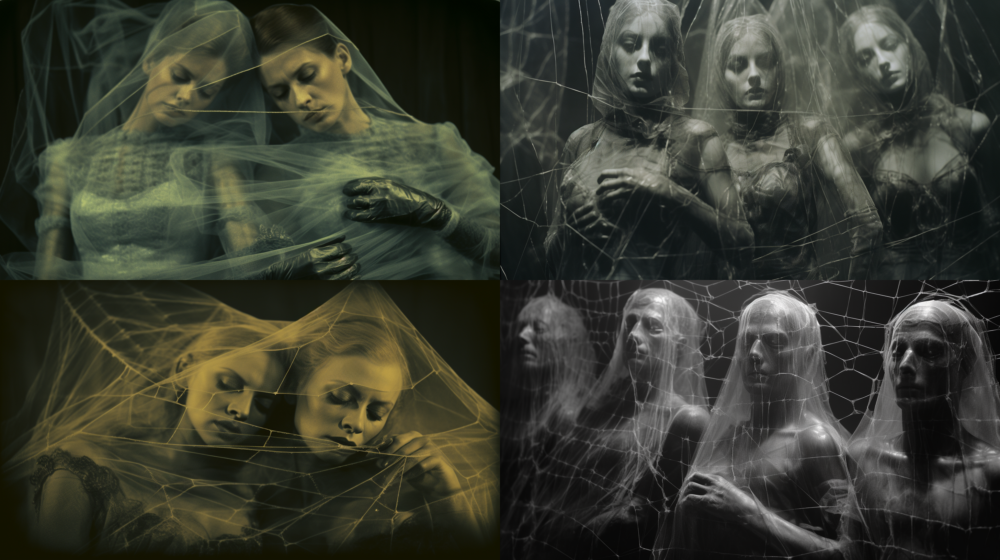

Primera página
Aquí comienza tu camino en el mundo digital. Todo gran proyecto empieza con
una simple línea de código: sigue adelante, tu creatividad es más poderosa de lo que
crees.
Sin un orden particular, mis aficiones son las siguientes:
- La fotografía
- La hidroponia
- Calistecnia
- La gestión cultural
- La música
La música que más me gusta es (en orden de preferencia):
- El trap
- El jazz
- La música urbana
Mis páginas favoritas
Estas son mis páginas favoritas:
Google
Microsoft
Yahoo!
Ahora quiero compartirles unas imágenes
EL ARTE ES TRANSFORMADOR

MIS SUEÑOS

MIS MIEDOS
Un lugar ideal para mis vacaciones
